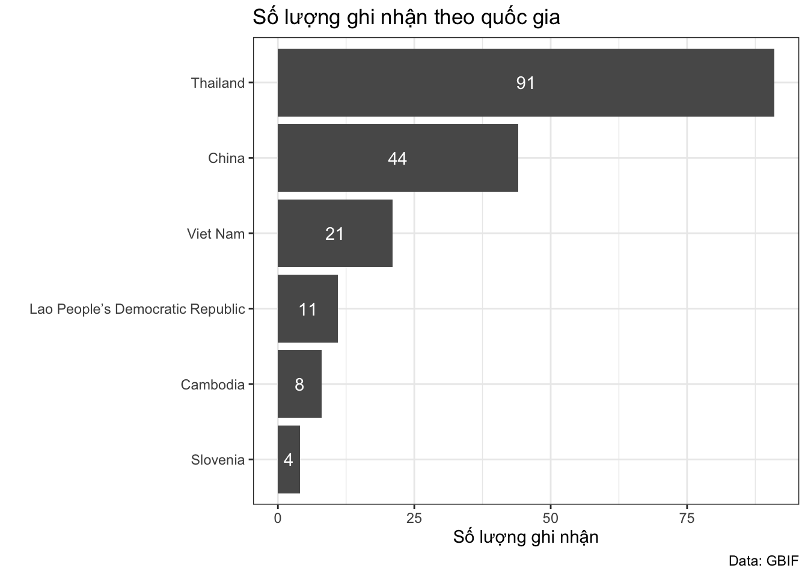
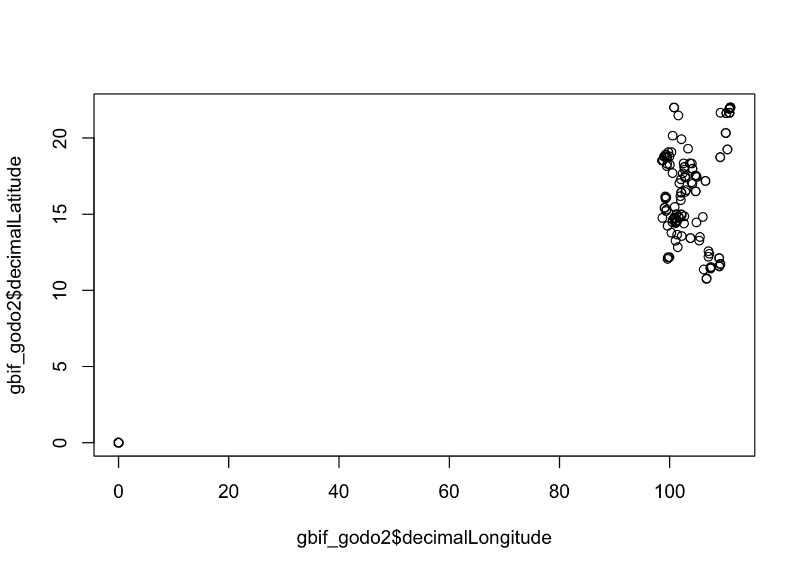
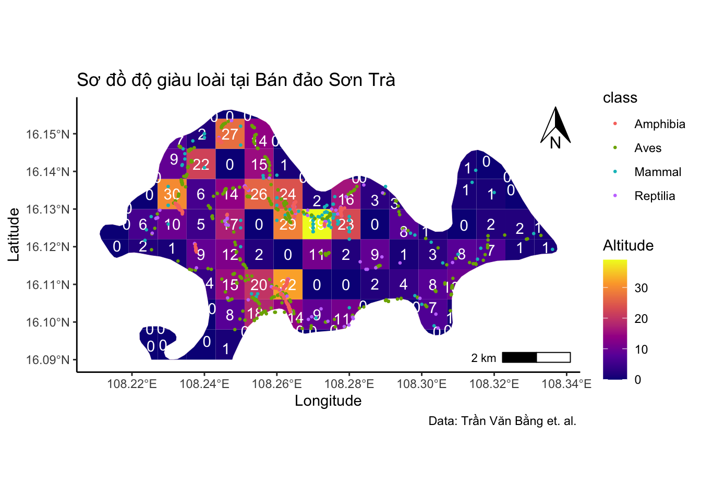
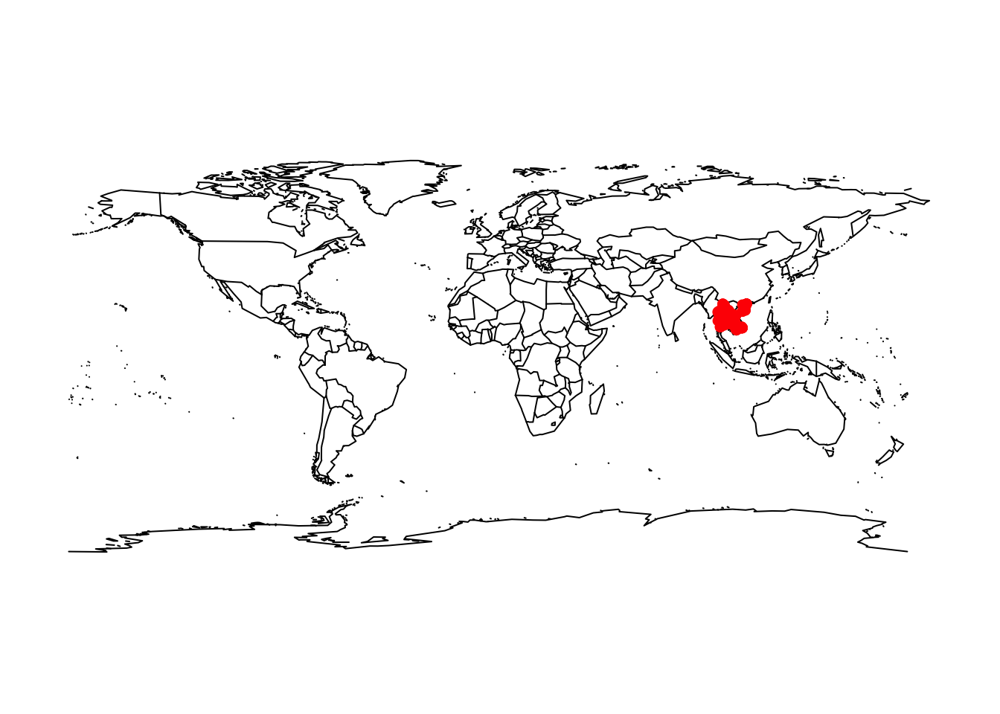
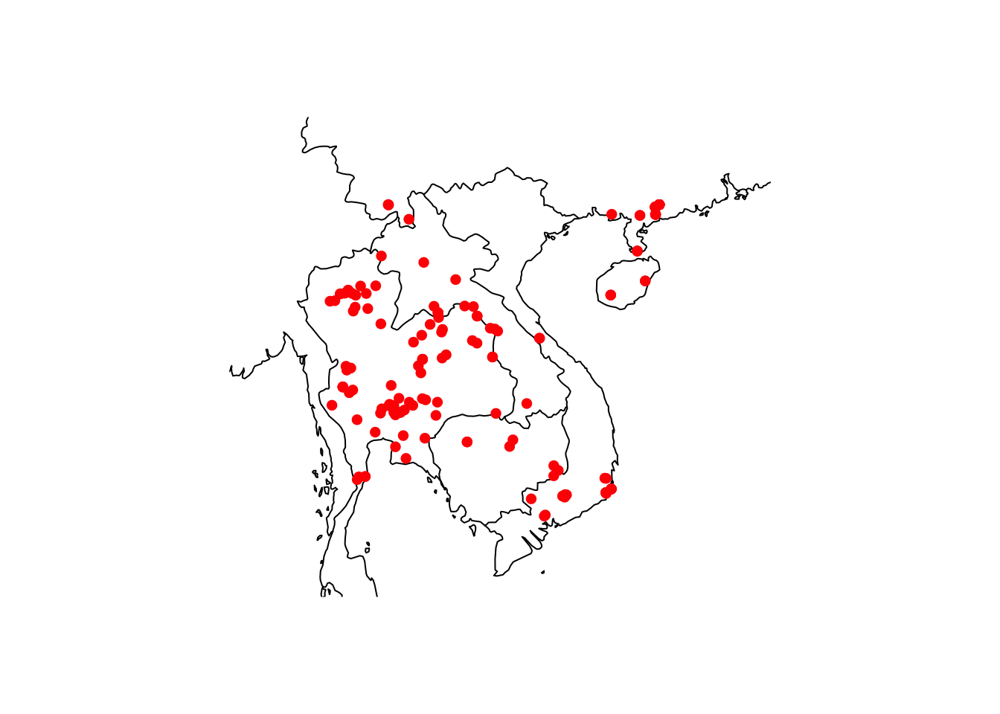
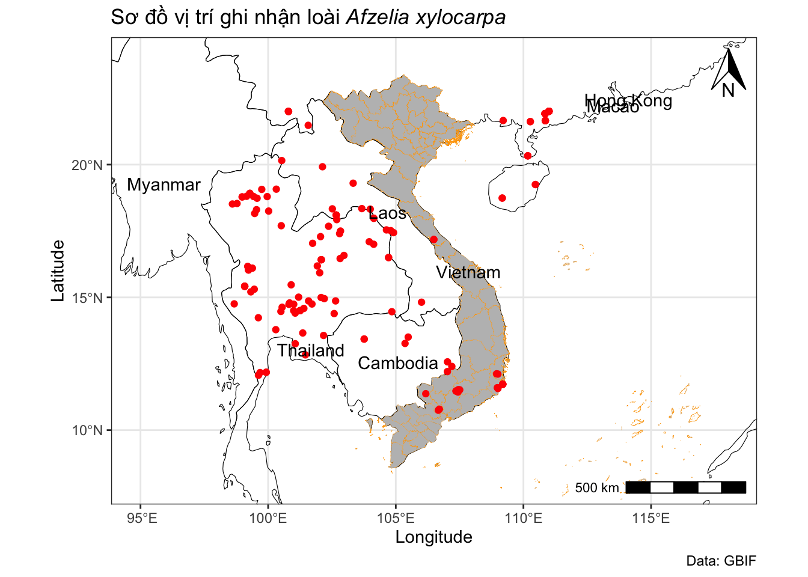

Phần 6 Tải ghi nhận loài từ dữ liệu GBIF
6.1 Tải ghi nhận
Sử dụng lệnh occ_data từ gói lệnh rgbif. Thêm tham số hasCoordinate = TRUE để lấy về các ghi nhận có thông tin về toạ độ phân bố.
Ví dụ tải các ghi nhận về cây Gõ đỏ (Afzelia xylocarpa)
Dữ liệu trả về là dạng list, trong đó bảng data chứa rất nhiều trường thông tin, chúng ta có thể lọc ra một số thông tin cơ bản như sau:
gbif_godo2 <- gbif_godo$data |>
select(recordedBy, recordNumber, country,decimalLatitude, decimalLongitude)Xem số lượng ghi nhận theo quốc gia
## # A tibble: 6 × 2
## country n
## <chr> <int>
## 1 Cambodia 8
## 2 China 44
## 3 Lao People’s Democratic Republic 11
## 4 Slovenia 4
## 5 Thailand 91
## 6 Viet Nam 21Vẽ nhanh biểu đồ
ggplot(soluong, aes(x= reorder(country,n), y = n)) +
geom_col() +
geom_text(aes(label = n), position = position_stack(vjust=0.5), color = "white") +
theme_bw() +
coord_flip()+
labs(title = "Số lượng ghi nhận theo quốc gia",
caption = "Data: GBIF",
x = "" , y = "Số lượng ghi nhận")
6.2 Tạo sơ đồ vị trí ghi nhận
Xem nhanh sơ đồ các điểm ghi nhận.

Trong dữ liệu tải về, một số điểm có toạ dộ (0,0). Nên chúng ta cần bỏ các điểm này ra trước khi vẽ lại sơ đồ.
gbif_godo3 <- gbif_godo2 |>
filter(decimalLongitude > 0, decimalLatitude >0)
plot(gbif_godo3$decimalLongitude, gbif_godo3$decimalLatitude)
Xem nhanh sơ đồ có ranh giới các quốc gia với gói lệnh maps.
library(maps)
map("world")
points(gbif_godo3[ , c("decimalLongitude", "decimalLatitude")],
pch = 16, col="red")
Phóng lớn sơ đồ đến khu vực phân bố loài
map("world", xlim = c(95,115), ylim = c(8,25), resolution = 0)
points(gbif_godo3[ , c("decimalLongitude", "decimalLatitude")],
pch = 16, col="red")
Tạo sơ đồ hoàn chỉnh
Các bạn có thể xem lại các thao tác cơ bản với tập tin bản đồ tại phần 4.
library(sf)
library(ggspatial)
library(rnaturalearth)
library(ggtext)
world <- ne_countries(scale = "medium", returnclass = "sf")
vietnam <- st_read("DATA/Vietnamdiaphantinh.geojson")## Reading layer `Vietnamdiaphantinh' from data source
## `/Users/bachnguyen/Library/CloudStorage/OneDrive-Personal/WORKING/ECOR/DATA/Vietnamdiaphantinh.geojson'
## using driver `GeoJSON'
## Simple feature collection with 63 features and 3 fields
## Geometry type: MULTIPOLYGON
## Dimension: XY
## Bounding box: xmin: 102.1421 ymin: 6.953306 xmax: 116.9473 ymax: 23.3939
## Geodetic CRS: WGS 84gbif_godo_sf <- gbif_godo3 |>
st_as_sf(coords = c("decimalLongitude", "decimalLatitude"), crs = 4326)
ggplot() +
geom_sf(data = world, fill = NA, color = "black") +
geom_sf(data = vietnam, fill = "grey", color="orange", linewidth = 0.05) +
geom_sf(data = gbif_godo_sf, fill = NA, color="red") +
geom_sf_text(data = world, aes(label = name)) +
annotation_north_arrow(location = "tr", height=unit(1, "cm"), width=unit(0.75, "cm")) +
annotation_scale(location = "br", width_hint = 0.2) +
theme(panel.grid.major = element_line(size = 0.1, linetype = 'solid')) +
theme_bw() +
labs(title="Sơ đồ vị trí ghi nhận loài *Afzelia xylocarpa*",
caption = "Data: GBIF",
x = "Longitude", y = "Latitude") +
theme(title = element_markdown()) +
coord_sf(xlim = c(95,118), ylim = c(8,24)) 